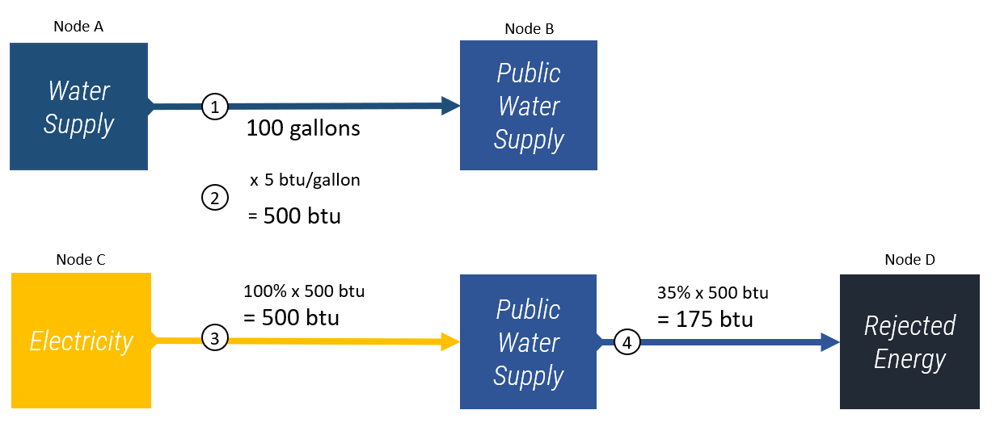

Basic Methodology
At its most basic level interflow collects input values connecting two sectors in specified units (e.g., water delivered to the agriculture sector),
calculates additional sector flows in alternative units based on intensity factors (e.g., energy demand based on water delivered to the agriculture sector),
and builds connections to and from additional sectors to carry those values (e.g., electricity sector connected to agriculture sector to deliver the energy)
interflow goes through the following steps in completing calculations:
Collects a Unit 1 “flow” value connecting Node A to Node B
Calculates a Unit 2 value associated with Node B based on a provided Unit 2 per Unit 1 intensity factor for Node B.
Builds a Unit 2 flow value from Node C to Node B as a “source” flow based on the provided fraction of the calculated Unit2 value assumed to come from Node C.
Builds a flow value from Node B to Node D to “discharge” the estimated value based on the provided fraction of the calculated value assumed to go to Node D.
This process is repeated for all nodal relationships within each region provided in the input data.
A real-world example of the above would be:
The total gallons of water withdrawn from the water supply (Node A) and delivered to the public water supply (Node B) is 100 gallons.
The energy required to withdraw a gallon of water from the water supply (Node A) by the public water supply sector (Node B) is 5 british thermal units (btu) per gallon. This calculates out to 500 btu in total based on the initial flow value.
The fraction of energy used in the public water supply sector that is supplied by the electricity sector (Node C) is estimated to be 100%. Therefore, the energy flow value connecting the electricity sector (Node C) to the public water supply sector (Node B) is 500 btu.
The fraction of energy used in the public water supply sector (Node B) that is lost to rejected energy (efficiency losses) is 35%. Therefore, the energy flow value connecting the public water supply sector (Node B) and the rejected energy node (Node D) is 0.35*500 = 175 btu.
The diagram below shows each of these steps.

Note that interflow does not require node inputs and outputs to be balanced. That is to say, inflows to a node do not have to equal outflows as demonstrated above with only 35% of the energy inflow calculated for public water supply being discharged.
Additionally, while the capability is provided to calculate alternate-unit flows (step 2 above) from input values, this is not a requirement. That is to say, a user could simply provide flow values connecting various nodes in step 1 and the model will simply return those flows unless told to do otherwise.
The example walked through above is a high level example of the flow process that demonstrates what is referred to in this documentation as “level 1” granularity. interflow is capable of calculating and handling sectors up to five levels of granularity. To equate that to the previous example, a level 1 sector would be the public water supply sector. Level 2 and beyond splits up the level 1 sector into subsectors, sub-subsectors, and so on. An example of a level 2 granularity using the above example would be Water Supply - Fresh (i.e., the portion of the total Water Supply sector that is fresh water as opposed to non-fresh water).
Up to five levels of granularity can be specified for each node. Various examples of level 5 granularity include the following:
Level 1 |
Level 2 |
Level 3 |
Level 4 |
Level 5 |
|---|
Electricity Generation |
Natural Gas |
Combined Cycle |
Carbon Capture Sequestration |
Recirculating Cooling |
Electricity Generation |
Natural Gas |
Combined Cycle |
Carbon Capture Sequestration |
Once Through Cooling |
Water Supply |
Fresh |
Surface Water |
Lake |
Lake Michigan |
More information on generalizability and input data format requirements can be found in the generalizability section.
Aggregation and Output Granularity
While highly granular data can provide significant insight into the finer details of a sector, big picture relationships can also be informative. Though interflow loops through the provided sectors and builds connections at level 5 granularity, it has the capability to aggregate the results to a specified level of granularity. For example, if interflow calculates energy demand in the public water supply sector for public water supply treatment and public water supply distribution, it is capable of returning the total energy in the public water supply (i.e., their sum). Whatever level of granularity is specified (between one and five, inclusive) as a parameter when the model is run will be returned in the output.
{kind=link}
{kind=link}
{kind=link}
{kind=link}
{kind=link}
{kind=link}